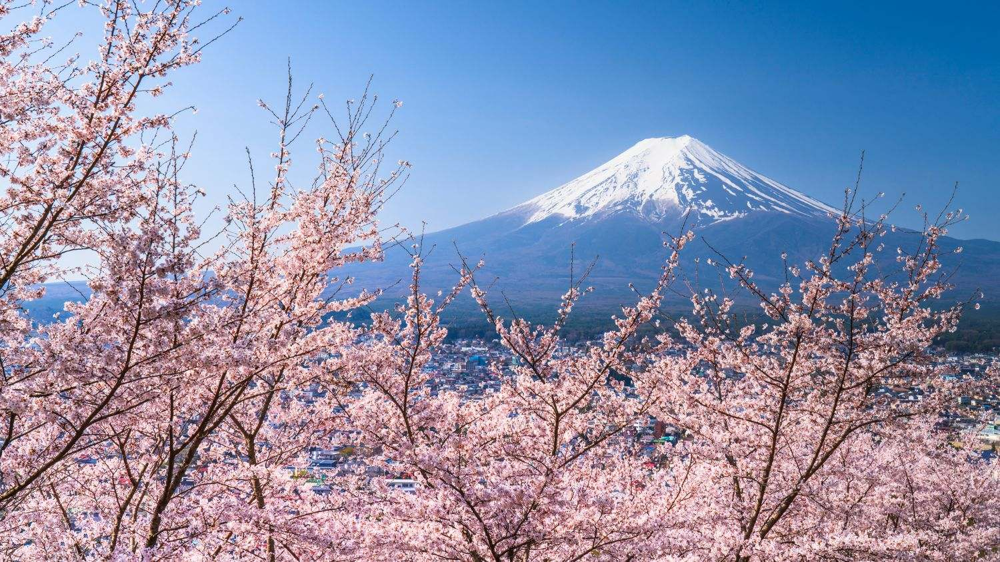
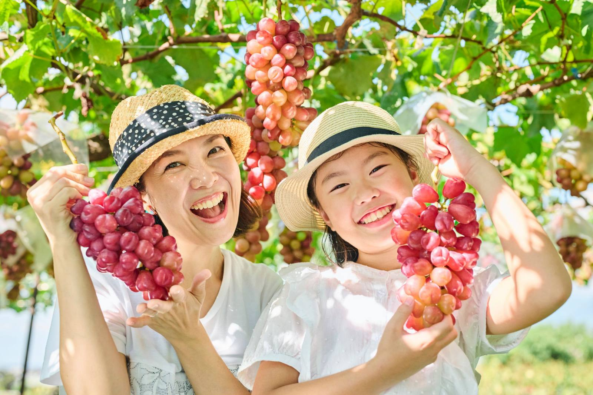
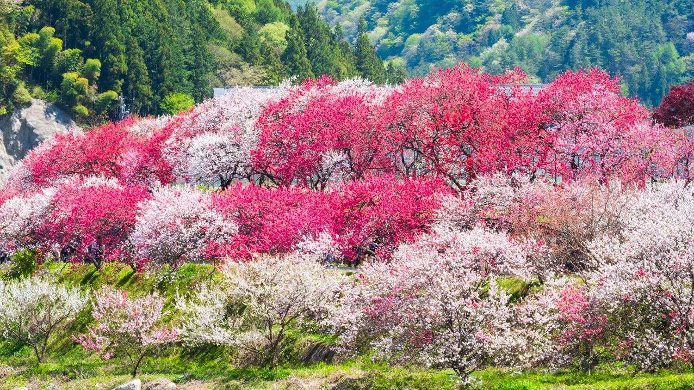

制度は毎年増えたり変わったりするのに、その案内は役所のホームページの奥にあって、忙しい毎日の中で全部を追いかけるのはむずかしい — わたしたちは沖縄でこの問題に向き合い、「もらいわすれ堂」を始めました。
運営会社の社名「フクギイロ」は、沖縄で家々を台風から守ってきた防風林の木・フクギにちなんだものです。山梨のご家庭にも、同じ気持ちでお届けします。
診断も情報も、ずっと無料です。県民のみなさまからお金をいただかないことを、運営の原則にしています。
これは、あなたにも関係のある物語。
約80万人が、
暮らしているのが山梨です。
— 盆地の灯りのひとつひとつに、暮らしがある —

富士山を仰いで
暮らすのが、山梨です。
日本一の山と、いっしょに目覚める毎日。

実りを、
育てるのが山梨です。
ぶどう棚の下、手をかけた分だけ甘くなる。

なにより、
美しいのが山梨です。
桃の春、ぶどうの秋。盆地はきょうも色づく。
そんな山梨に、いま。
まだ眠っている“ささえ”があります。
国や県、市町村が用意した給付金や手当が——
「知らなかった」というだけで、
届かないまま終わることがある。
一人が受け取るたび、
山梨のみらいは、すこし明るくなる。
とどけ、山梨のご家庭へ。
もらいわすれ堂 山梨版
そのみらいは、
あなたの家から はじまる。
こどもも、おとなも、おじいちゃんも、おばあちゃんも。
あなたの家にも、まだ気づいていない
“ささえ”があるかもしれません。
無料 ・ 匿名 ・ 登録不要ではじめられます
国や市町村の給付金・手当には、「申請しないと受け取れない」ものがたくさんあります。
あなたが受け取るまで、いっしょに。
匿名 ・ 登録不要 ・ 名前や住所は聞きません
どれも「知っていれば受け取れたかもしれない」ものです。あなたは悪くありません。
制度は毎年増えたり変わったりするのに、その案内は役所のホームページの奥にあって、忙しい毎日の中で全部を追いかけるのはむずかしい — わたしたちは沖縄でこの問題に向き合い、「もらいわすれ堂」を始めました。
運営会社の社名「フクギイロ」は、沖縄で家々を台風から守ってきた防風林の木・フクギにちなんだものです。山梨のご家庭にも、同じ気持ちでお届けします。
診断も情報も、ずっと無料です。県民のみなさまからお金をいただかないことを、運営の原則にしています。
ご家族の状況をいくつか答えるだけで、「使える可能性のある制度」が出てきます。
結果は「可能性: 高/中」の2段階でお伝えし、断定はしません。
回答はお使いの端末の中だけに残り、送信されません。
あなたが実際に受け取れたご報告が、次の誰かの「もらい忘れ」を防ぎます。
制度名とおおよその金額だけで大丈夫。お名前や口座番号はうかがいません。
計10万円相当(妊娠時5万+出産時5万)。面談とセットの申請制です(要確認)
大学等の授業料減免+給付型奨学金。多子世帯は所得制限なく対象になる場合があります(要確認)
所得に応じて7割/5割/2割の軽減。失業・災害時の減免もあります(要確認)
災害で住まいに大きな被害を受けたとき最大300万円(要確認)
現在は全国共通の国の制度を掲載し、それぞれに申請準備シート(持ち物・窓口での言い方)を用意しています。山梨県・27市町村の制度は、各公式サイトの利用条件を確認しながら順次追加します(市町村ページはこちら)。
ライフイベント別の一覧を見るはい。山梨県にお住まいの方は、診断も情報もすべて無料です。運営費用は、法人向けサービスなど企業のお客様からいただいています。
「県民のみなさまからお金をいただかない」ことを運営の原則にしています。運営会社(株式会社フクギイロ)の法人向けサービスなどの収益で運営しています。
申請手続きの代行は、法律上、専門資格を持つ方(社会保険労務士・行政書士など)にしかできないため、行っていません。そのかわり、公式ページへのご案内と「窓口でこう聞けば大丈夫」という準備までをお手伝いします。
いいえ。お名前・ご住所・電話番号の入力は不要です。市町村名やご家族の人数など、診断に必要な最小限のことだけをおたずねし、回答はお使いの端末の中だけに残ります。
締切が近い制度を、LINEでお知らせします(締切の約1か月前から・無料)。
お名前の入力は不要です。配信は順次はじめていきます。
登録しなくても大丈夫です。制度の一覧は、いつでもぜんぶ見られます。